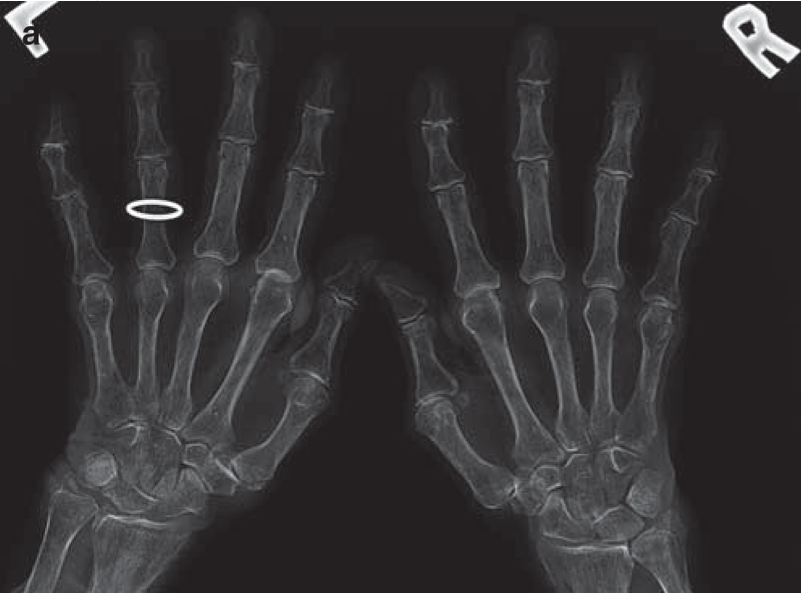

Osteoporosis
- Osteoporosis is a systemic disorder of bone metabolism characterized by a decreased bone mineral density and deterioration in bone microarchitecture.
- There is a decline in both bone quality and quantity
- Hand radiographs in osteoporotic patients may reveal characteristic findings. There is diffuse increase in lucency with thinning of cortex and trabeculae.
- The metacarpal index is a useful tool in the assessment of osteoporosis and has been shown to be associated with risk of hip fracture.
Metacarpal index:

a) PA radiographs of the hands demonstrating osteoporosis

b) calculation of the metacarpal index of the non-dominant second metacarpal at the mid-diaphysis. Measure the width bone {a} and the combined cortical thickness {b}, Metacarpal Index = a/b. References are available for different age groups and ethnicity. In general normal values are greater than 50%.